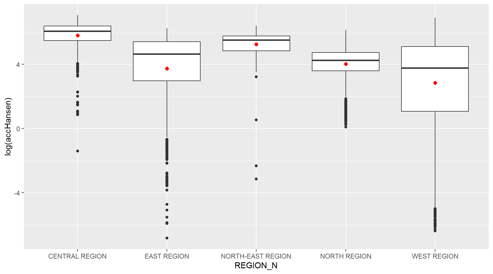
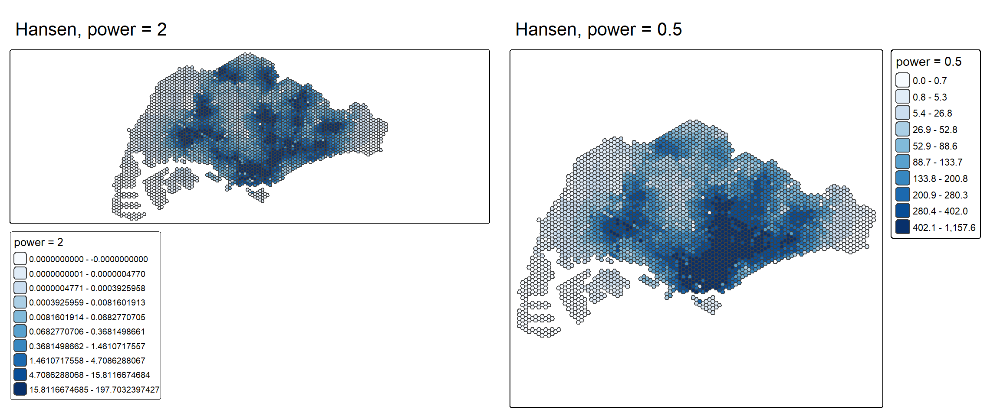
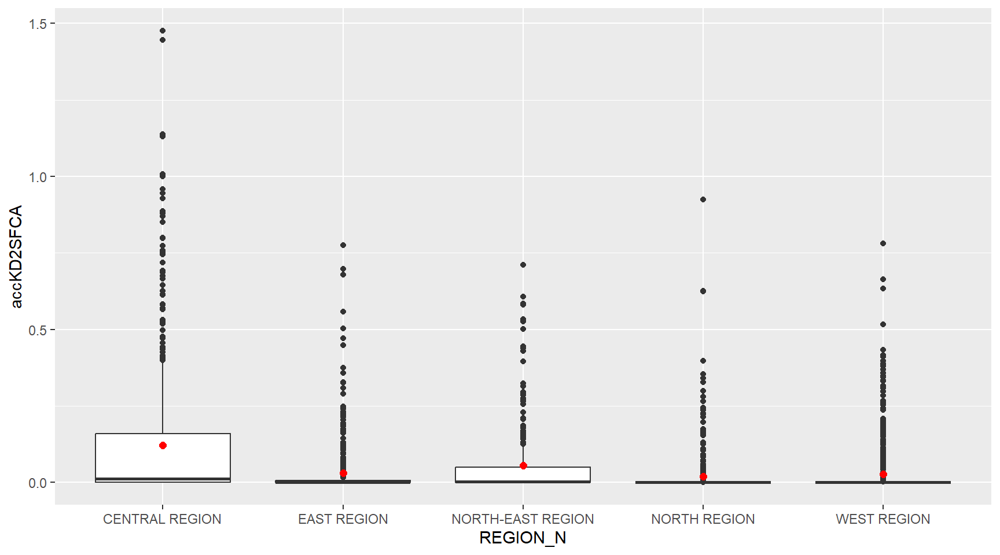
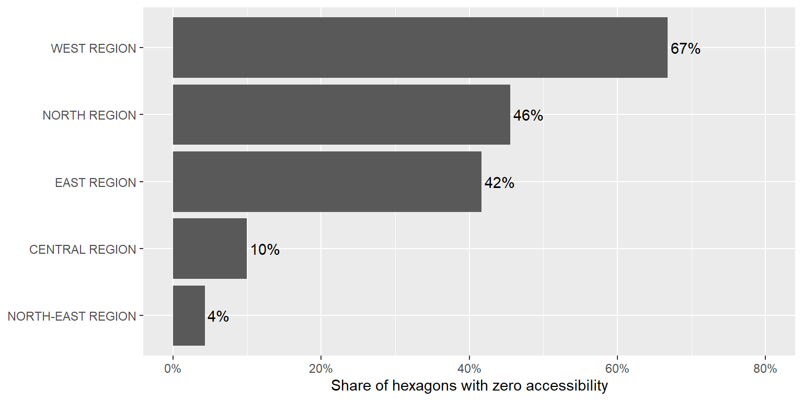
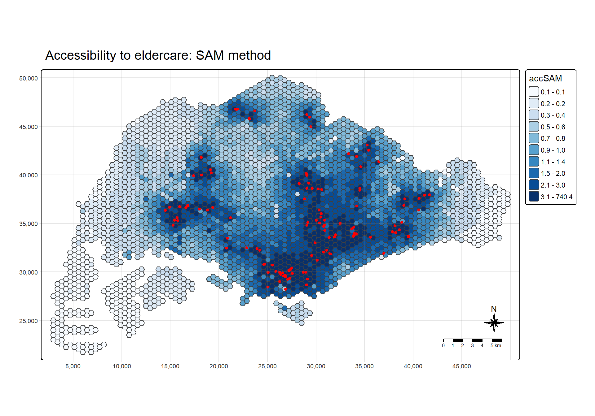
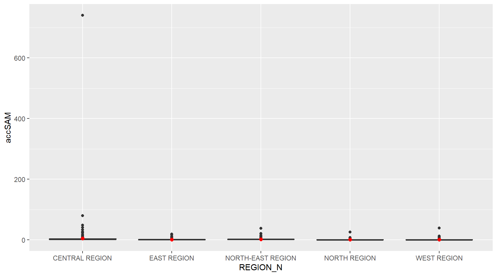
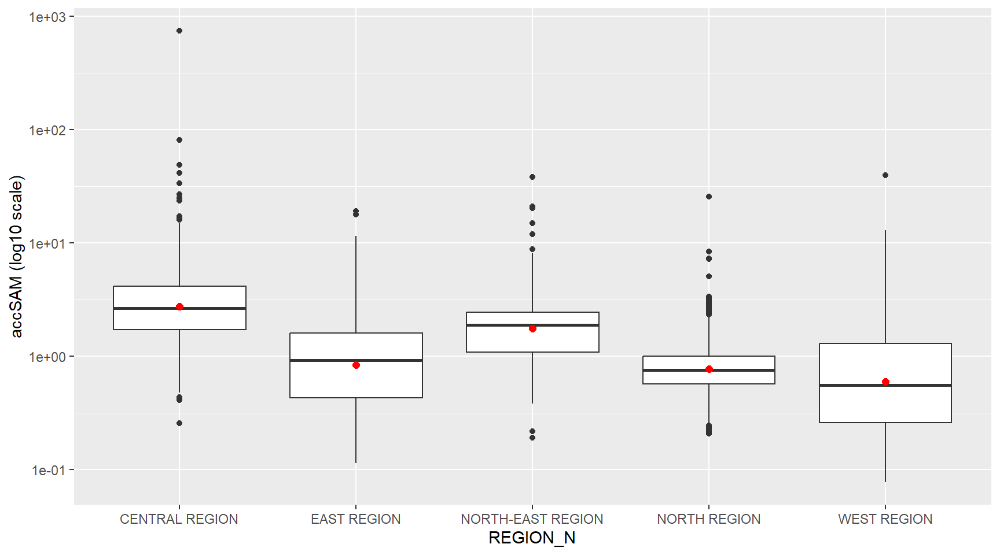
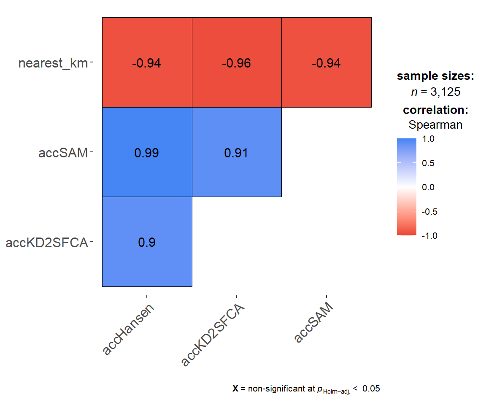
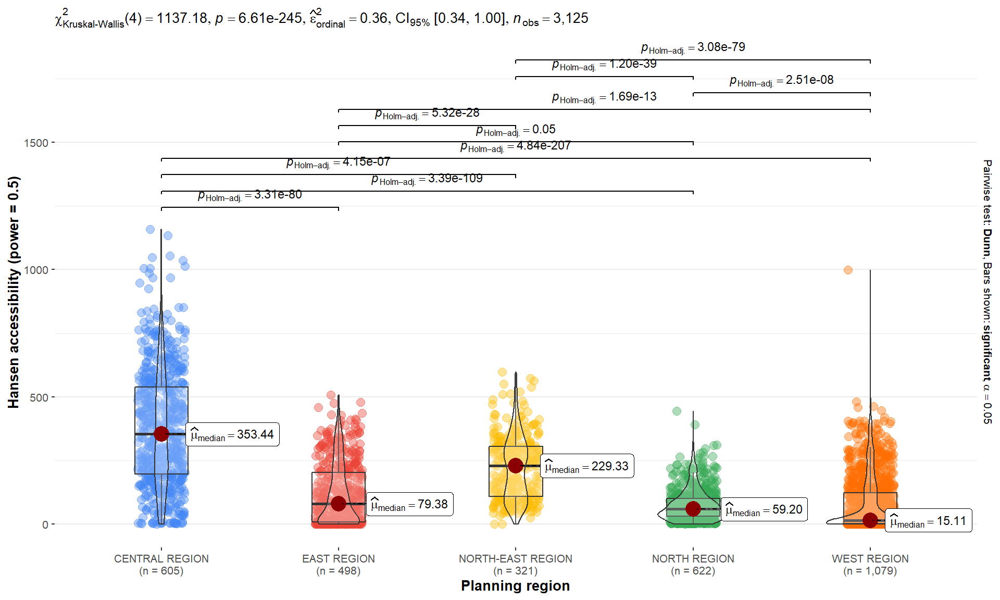

Show the code
pacman::p_load(tmap, SpatialAcc, sf,
ggstatsplot, reshape2,
tidyverse, knitr)How easily each part of Singapore can reach an eldercare centre, measured three ways
This exercise measures how easily each part of Singapore can reach an eldercare centre. The island is covered by 3,125 hexagons, and for every hexagon I compute an accessibility score from the road distance to all 120 eldercare centres.
Three models produce the score. Hansen’s potential model adds up the supply around a location and discounts it by distance. KD2SFCA, the kernel density two step floating catchment area method, also accounts for how many people compete for the same centre. SAM, the Spatial Accessibility Measure, sums supply over distance raised to a power. All three come from the ac() function of SpatialAcc.
The work has six parts. Part 1 and Part 2 prepare the spatial layers and the distance matrix. Parts 3 to 5 run each model, map the result and compare the five URA planning regions with boxplots. Part 6 puts the three measures side by side and adds a few checks of my own.
Four datasets are used, three spatial layers and one table.
MP14_SUBZONE_NO_SEA_PL is the URA Master Plan 2014 subzone boundary from data.gov.sg. It has 323 subzones, and I only need it for the REGION_N field that tells me which planning region a hexagon belongs to.
hexagons is a grid of 250 m radius hexagons made with st_make_grid(). Each hexagon is a demand point, or origin.
ELDERCARE holds the locations of eldercare services from data.gov.sg in ESRI shapefile format. Each centre is a supply point, or destination.
OD_Matrix.csv gives the road distance from every hexagon to every centre, 375,000 rows in total. It has six fields, origin_id and destination_id for the two ends, entry_cost from the hexagon to the nearest road, network_cost along the road network, exit_cost from the road to the centre, and total_cost as the sum of the three. All costs are in metres.
The last three datasets were prepared by Prof. Kam for teaching, so I keep them for this exercise only and leave the data folder out of the public repository.
I put the three shapefiles in data/geospatial and the csv in data/aspatial. The notes use chap17/data/..., and I changed every path to match this layout.
The geospatial folder came with ELDERCARE.qmd and hexagons.qmd. These are QGIS metadata files in XML, and they happen to share the Quarto extension. quarto render picks up every .qmd file in the project, so it tried to render both of them as pages. I deleted the two files since st_read() does not need them.
pacman::p_load(tmap, SpatialAcc, sf,
ggstatsplot, reshape2,
tidyverse, knitr)sf reads and transforms the spatial data, and SpatialAcc computes the three accessibility measures. tidyverse brings in readr, dplyr, tidyr and ggplot2, so I do not load them one by one. tmap draws the maps and ggstatsplot runs the statistical comparison in Part 6. reshape2 is listed in the notes but nothing below calls it. I added knitr for one table.
packageVersion("SpatialAcc")[1] '0.1.6'The formulas behind ac() matter for reading the results, so I checked the version. I am using 0.1-6, and the comments on each model below are based on this version of the function.
mpsz <- st_read(dsn = "data/geospatial",
layer = "MP14_SUBZONE_NO_SEA_PL")Reading layer `MP14_SUBZONE_NO_SEA_PL' from data source
`D:\mengtingyu88\geospatial-coursework\Hands-on_Ex\Hands-on_Ex07\data\geospatial'
using driver `ESRI Shapefile'
Simple feature collection with 323 features and 15 fields
Geometry type: MULTIPOLYGON
Dimension: XY
Bounding box: xmin: 2667.538 ymin: 15748.72 xmax: 56396.44 ymax: 50256.33
Projected CRS: SVY21hexagons <- st_read(dsn = "data/geospatial",
layer = "hexagons")Reading layer `hexagons' from data source
`D:\mengtingyu88\geospatial-coursework\Hands-on_Ex\Hands-on_Ex07\data\geospatial'
using driver `ESRI Shapefile'
Simple feature collection with 3125 features and 6 fields
Geometry type: POLYGON
Dimension: XY
Bounding box: xmin: 2667.538 ymin: 21506.33 xmax: 50010.26 ymax: 50256.33
Projected CRS: SVY21 / Singapore TMeldercare <- st_read(dsn = "data/geospatial",
layer = "ELDERCARE")Reading layer `ELDERCARE' from data source
`D:\mengtingyu88\geospatial-coursework\Hands-on_Ex\Hands-on_Ex07\data\geospatial'
using driver `ESRI Shapefile'
Simple feature collection with 120 features and 19 fields
Geometry type: POINT
Dimension: XY
Bounding box: xmin: 14481.92 ymin: 28218.43 xmax: 41665.14 ymax: 46804.9
Projected CRS: SVY21 / Singapore TMThe subzone layer has 323 multipolygons with 15 fields, the hexagon layer has 3,125 polygons, and the eldercare layer has 120 points. The hexagons and the centres already report SVY21 / Singapore TM. The subzone layer only reports SVY21 with no EPSG code attached.
mpsz <- st_transform(mpsz, 3414)
eldercare <- st_transform(eldercare, 3414)
hexagons <- st_transform(hexagons, 3414)st_crs(mpsz)Coordinate Reference System:
User input: EPSG:3414
wkt:
PROJCRS["SVY21 / Singapore TM",
BASEGEOGCRS["SVY21",
DATUM["SVY21",
ELLIPSOID["WGS 84",6378137,298.257223563,
LENGTHUNIT["metre",1]]],
PRIMEM["Greenwich",0,
ANGLEUNIT["degree",0.0174532925199433]],
ID["EPSG",4757]],
CONVERSION["Singapore Transverse Mercator",
METHOD["Transverse Mercator",
ID["EPSG",9807]],
PARAMETER["Latitude of natural origin",1.36666666666667,
ANGLEUNIT["degree",0.0174532925199433],
ID["EPSG",8801]],
PARAMETER["Longitude of natural origin",103.833333333333,
ANGLEUNIT["degree",0.0174532925199433],
ID["EPSG",8802]],
PARAMETER["Scale factor at natural origin",1,
SCALEUNIT["unity",1],
ID["EPSG",8805]],
PARAMETER["False easting",28001.642,
LENGTHUNIT["metre",1],
ID["EPSG",8806]],
PARAMETER["False northing",38744.572,
LENGTHUNIT["metre",1],
ID["EPSG",8807]]],
CS[Cartesian,2],
AXIS["northing (N)",north,
ORDER[1],
LENGTHUNIT["metre",1]],
AXIS["easting (E)",east,
ORDER[2],
LENGTHUNIT["metre",1]],
USAGE[
SCOPE["Cadastre, engineering survey, topographic mapping."],
AREA["Singapore - onshore and offshore."],
BBOX[1.13,103.59,1.47,104.07]],
ID["EPSG",3414]]All three layers now carry EPSG 3414. For the hexagons and the centres the transform changes nothing, but running it on all three makes sure the later spatial join compares like with like.
eldercare <- eldercare %>%
select(fid, ADDRESSPOS) %>%
mutate(capacity = 100)
hexagons <- hexagons %>%
select(fid) %>%
mutate(demand = 100)The eldercare layer keeps its id and postal code, and the hexagon layer keeps its id. I added capacity to the centres and demand to the hexagons, both set to 100. A real study would use the number of places at each centre and the elderly population in each hexagon. With a constant on both sides, every result below depends only on where the centres are and how far the roads take you.
range(eldercare$fid)[1] 1 133The eldercare ids run from 1 to 133 although there are only 120 centres, so some ids are missing. I keep this in mind for the distance matrix, where the column order has to follow the row order of eldercare.
ODMatrix <- read_csv("data/aspatial/OD_Matrix.csv", skip = 0)
glimpse(ODMatrix)Rows: 375,000
Columns: 6
$ origin_id <dbl> 1, 1, 1, 1, 1, 1, 1, 1, 1, 1, 1, 1, 1, 1, 1, 1, 1, 1, 1…
$ destination_id <dbl> 1, 2, 3, 4, 5, 6, 8, 9, 10, 11, 12, 13, 14, 15, 16, 18,…
$ entry_cost <dbl> 667.9336, 667.9336, 667.9336, 667.9336, 667.9336, 667.9…
$ network_cost <dbl> 19846.87, 45026.76, 17644.17, 36009.56, 31068.09, 31194…
$ exit_cost <dbl> 47.64874, 31.87162, 173.47882, 92.19676, 64.62840, 117.…
$ total_cost <dbl> 20562.45, 45726.57, 18485.58, 36769.69, 31800.65, 31979…The table is in long format, one row per origin and destination pair. 3,125 hexagons times 120 centres gives the 375,000 rows.
ac() expects a matrix with one row per origin and one column per destination. The notes use spread(), which tidyr has replaced with pivot_wider(), so I used the newer function.
distmat_wide <- ODMatrix %>%
select(origin_id, destination_id, total_cost) %>%
pivot_wider(names_from = destination_id,
values_from = total_cost)
c(rows_match = identical(distmat_wide$origin_id, as.numeric(hexagons$fid)),
cols_match = identical(colnames(distmat_wide)[-1], as.character(eldercare$fid)))rows_match cols_match
TRUE TRUE Both checks return TRUE. The rows follow the hexagon ids and the columns follow the eldercare ids in the same order as the two sf objects. ac() matches demand to rows and supply to columns by position only, so a mismatch here would give wrong numbers without any error.
distmat <- distmat_wide %>%
select(-origin_id)
dim(distmat)[1] 3125 120distmat_km <- as.matrix(distmat / 1000)The costs are in metres because SVY21 is a projected system in metres. The decay functions below are written for kilometres, so I divided by 1,000.
nearest_km <- apply(distmat_km, 1, min)
summary(nearest_km) Min. 1st Qu. Median Mean 3rd Qu. Max.
0.03693 2.18312 4.06401 6.10484 8.06108 32.45008 mean(nearest_km > 5)[1] 0.40992Before modelling I looked at the distance from each hexagon to its closest centre. The median is about 4.1 km, and 41% of the hexagons have no centre within 5 km. This number comes back in the KD2SFCA section.
In version 0.1-6, the Hansen score for a hexagon is the capacity of every centre weighted by exp(-power * d) and summed. Demand does not enter the formula and d0 is not used, which is why the notes leave d0 commented out.
acc_Hansen <- data.frame(ac(hexagons$demand,
eldercare$capacity,
distmat_km,
#d0 = 50,
power = 2,
family = "Hansen"))
colnames(acc_Hansen)[1] "ac.hexagons.demand..eldercare.capacity..distmat_km..power...2.."The default column name is the whole function call, so I renamed it.
colnames(acc_Hansen) <- "accHansen"
acc_Hansen <- as_tibble(acc_Hansen)
hexagon_Hansen <- bind_cols(hexagons, acc_Hansen)
class(hexagon_Hansen)[1] "sf" "data.frame"bind_cols() attaches the scores to the hexagons in row order, and the result is still an sf data frame, so it can go straight into tmap. I saved this power 2 version under a separate name for a comparison later.
hexagon_Hansen2 <- hexagon_HansenThe notes then repeat the four steps in one chunk with power = 0.5. I used this version as the main Hansen result, the same as the notes.
acc_Hansen <- data.frame(ac(hexagons$demand,
eldercare$capacity,
distmat_km,
#d0 = 50,
power = 0.5,
family = "Hansen"))
colnames(acc_Hansen) <- "accHansen"
acc_Hansen <- as_tibble(acc_Hansen)
hexagon_Hansen <- bind_cols(hexagons, acc_Hansen)
summary(hexagon_Hansen$accHansen) Min. 1st Qu. Median Mean 3rd Qu. Max.
1.080e-03 1.371e+01 8.872e+01 1.550e+02 2.399e+02 1.158e+03 The scores go from almost 0 to about 1,158, with a median of 89. The mean of 155 sits well above the median, so a small number of hexagons have very high values.
The step by step chunk in the notes uses power = 2 and the combined chunk uses power = 0.5, but the text presents them as the same calculation. With exp(-power * d), the weight falls to half at a distance of ln 2 divided by the power. That is about 0.35 km for power 2 and about 1.39 km for power 0.5, so the two runs describe very different travel behaviour. I compare them at the end of this part.
mapex <- st_bbox(hexagons)st_bbox() stores the extent of the hexagon layer, and I reuse it for all three maps so they cover exactly the same area.
tm_shape(hexagon_Hansen,
bbox = mapex) +
tm_polygons(fill = "accHansen",
fill.scale = tm_scale_intervals(
style = "quantile",
n = 10,
values = "brewer.blues")) +
tm_shape(eldercare) +
tm_dots(size = 0.3,
fill = "red",
col = "black") +
tm_title("Accessibility to eldercare: Hansen method") +
tm_layout(frame = TRUE) +
tm_compass(type = "8star", size = 2) +
tm_scalebar() +
tm_grid(alpha = 0.2)
The darkest hexagons form a broad band across the south and centre of the island, where the red dots are most crowded. Smaller dark patches sit around the centres in the north, the north east, the east and the west. The lightest classes cover the far west around Tuas and the western islands, the north west, the eastern tip near Changi and the nature reserve in the middle of the island.
hexagon_Hansen <- st_join(hexagon_Hansen, mpsz,
join = st_intersects)
nrow(hexagon_Hansen)[1] 5406The join adds the planning region of every subzone a hexagon touches. The output has 5,406 rows instead of 3,125.
ggplot(data = hexagon_Hansen,
aes(y = log(accHansen),
x = REGION_N)) +
geom_boxplot() +
geom_point(stat = "summary",
fun = "mean",
colour = "red",
size = 2)
The y axis uses the log of the score because the raw values are heavily skewed. The Central Region has the highest median at about 6.1 on the log scale, followed by the North East at 5.5. The East and the North sit in the middle, and the West has the lowest median at 3.8. The West also has the longest lower whisker, with its bottom quarter below about 1.1 on the log scale. Its red mean point sits well below the median, pulled down by Tuas and the western islands.
The notes pass fun.y = "mean" to geom_point(). ggplot2 renamed this argument to fun in version 3.3.0, so I changed it.
st_intersects also duplicates hexagons. A hexagon that touches three subzones appears three times. Out of 3,125 hexagons, 1,522 appear more than once and one appears eight times. Only 197 of them cross a region boundary, so most of the duplicates are copies inside the same region. Small subzones are packed into the dense parts of the island, so well served hexagons are copied more often than remote ones. I fix this in Part 6.
map_p2 <- tm_shape(hexagon_Hansen2, bbox = mapex) +
tm_polygons(fill = "accHansen",
fill.scale = tm_scale_intervals(style = "quantile", n = 10,
values = "brewer.blues"),
fill.legend = tm_legend(title = "power = 2")) +
tm_title("Hansen, power = 2")
map_p05 <- tm_shape(hexagon_Hansen %>% distinct(fid, .keep_all = TRUE), bbox = mapex) +
tm_polygons(fill = "accHansen",
fill.scale = tm_scale_intervals(style = "quantile", n = 10,
values = "brewer.blues"),
fill.legend = tm_legend(title = "power = 0.5")) +
tm_title("Hansen, power = 0.5")
tmap_arrange(map_p2, map_p05, ncol = 2)
With power 2, the dark classes shrink into tight rings around each group of centres, and the space between the rings drops into the light classes quickly. 32% of the hexagons score below 0.001, so the lower legend classes hold numbers that are too small to mean anything.
c(power_2 = cor(hexagon_Hansen2$accHansen, nearest_km, method = "spearman"),
power_0.5 = cor(acc_Hansen$accHansen, nearest_km, method = "spearman")) power_2 power_0.5
-0.9968239 -0.9373807 The rank correlation with the distance to the nearest centre is −0.997 for power 2 and −0.937 for power 0.5. At power 2 the Hansen score ranks the hexagons almost exactly by the distance to the closest centre. Power 0.5 lets centres a few kilometres away still count, which fits how people travel in Singapore better.
KD2SFCA works in two steps. First, each centre divides its capacity by the demand within d0 km, weighted by distance. Then each hexagon adds up the ratios of the centres it can reach, using the same weights. In version 0.1-6 the weight is exp(-d^power) and anything beyond d0 gets zero.
acc_KD2SFCA <- data.frame(ac(hexagons$demand,
eldercare$capacity,
distmat_km,
d0 = 5,
power = 2,
family = "KD2SFCA"))
colnames(acc_KD2SFCA) <- "accKD2SFCA"
acc_KD2SFCA <- as_tibble(acc_KD2SFCA)
hexagon_KD2SFCA <- bind_cols(hexagons, acc_KD2SFCA)
summary(hexagon_KD2SFCA$accKD2SFCA) Min. 1st Qu. Median Mean 3rd Qu. Max.
0.000e+00 0.000e+00 3.000e-08 3.840e-02 4.616e-03 1.476e+00 sum(hexagon_KD2SFCA$accKD2SFCA == 0)[1] 12811,281 hexagons score exactly zero, which matches the 41% of hexagons with no centre within 5 km from Part 2. Everywhere else the score is a share of supply per person of demand, and the maximum is about 1.48.
sum(hexagons$demand * hexagon_KD2SFCA$accKD2SFCA)[1] 12000sum(eldercare$capacity)[1] 12000Multiplying each score by demand and adding them up gives back 12,000, the total capacity of the 120 centres. The two step method only shares out the capacity that exists, which is why the mean score of 0.0384 equals 12,000 divided by the total demand of 312,500.
tm_shape(hexagon_KD2SFCA,
bbox = mapex) +
tm_polygons(fill = "accKD2SFCA",
fill.scale = tm_scale_intervals(
style = "quantile",
n = 10,
values = "brewer.blues")) +
tm_shape(eldercare) +
tm_dots(size = 0.3,
fill = "red",
col = "black") +
tm_title("Accessibility to eldercare: KD2SFCA method") +
tm_layout(frame = TRUE) +
tm_compass(type = "8star", size = 2) +
tm_scalebar() +
tm_grid(alpha = 0.2)
This map looks very different from the Hansen map. Accessibility shows up as separate islands of blue around each cluster of centres, with almost nothing between them. The whole western edge, the north west, the central nature reserve and the east coast near Changi fall into the lightest class.
With 41% of the values at exactly zero, the 10%, 20%, 30% and 40% quantiles all equal zero, and the 50% and 60% quantiles are also close to zero. Several of the ten breaks collapse into one, so the map has fewer than ten classes, and the bottom class takes in both the true zeros and some very small positive values. The quantile scheme makes sense for Hansen and SAM, but for KD2SFCA I read this map together with the zero shares in the extra below.
hexagon_KD2SFCA <- st_join(hexagon_KD2SFCA, mpsz,
join = st_intersects)ggplot(data = hexagon_KD2SFCA,
aes(y = accKD2SFCA,
x = REGION_N)) +
geom_boxplot() +
geom_point(stat = "summary",
fun = "mean",
colour = "red",
size = 2)
Every box is pressed against zero, and the plot mostly shows outliers. The medians for the East, the North and the West are zero or close to it. The Central Region has the widest box and the highest mean, about 0.12 compared with 0.02 to 0.05 for the other regions. All the means sit above the boxes, so in every region a minority of hexagons near the centres holds most of the accessibility.
The boxplot hides the most useful fact in this model, which is how many hexagons fall outside every catchment.
hexagon_KD2SFCA %>%
st_drop_geometry() %>%
distinct(fid, .keep_all = TRUE) %>%
group_by(REGION_N) %>%
summarise(zero_share = mean(accKD2SFCA == 0)) %>%
ggplot(aes(x = reorder(REGION_N, zero_share), y = zero_share)) +
geom_col() +
geom_text(aes(label = scales::percent(zero_share, accuracy = 1)),
hjust = -0.1) +
coord_flip() +
scale_y_continuous(labels = scales::percent, limits = c(0, 0.8)) +
labs(x = NULL, y = "Share of hexagons with zero accessibility")
I kept each hexagon once here, under the first region it was matched to. In the West 67% of hexagons have no centre within 5 km, and the North and the East are both above 40%. The Central Region is at 10% and the North East at 4%. The West combines Tuas, the Jurong industrial area and the western catchment, so most of its land is far from any centre.
acc_SAM <- data.frame(ac(hexagons$demand,
eldercare$capacity,
distmat_km,
d0 = 5,
power = 2,
family = "SAM"))
colnames(acc_SAM) <- "accSAM"
acc_SAM <- as_tibble(acc_SAM)
hexagon_SAM <- bind_cols(hexagons, acc_SAM)
summary(hexagon_SAM$accSAM) Min. 1st Qu. Median Mean 3rd Qu. Max.
0.07718 0.40249 0.86880 1.77638 1.82919 740.42209 In version 0.1-6, SAM divides each centre’s capacity by the demand of the hexagon times the distance to the power, then adds this up over all centres. The code does not use d0, even though the notes pass d0 = 5.
all.equal(hexagon_SAM$accSAM, unname(rowSums(1 / distmat_km^2)))[1] TRUECapacity and demand are both 100 here, so SAM should reduce to the sum of one over the squared distance to all 120 centres. The check returns TRUE, and the 5 km argument does not change anything.
The maximum of 740 is far above the median of 0.87. It belongs to hexagon 2251 in Kallang, which is 37 m from a centre. One over 0.037 squared is about 730 by itself, so this single centre decides the score. The next highest hexagon is about 80.
tm_shape(hexagon_SAM,
bbox = mapex) +
tm_polygons(fill = "accSAM",
fill.scale = tm_scale_intervals(
style = "quantile",
n = 10,
values = "brewer.blues")) +
tm_shape(eldercare) +
tm_dots(size = 0.3,
fill = "red",
col = "black") +
tm_title("Accessibility to eldercare: SAM method") +
tm_layout(frame = TRUE) +
tm_compass(type = "8star", size = 2) +
tm_scalebar() +
tm_grid(alpha = 0.2)
The SAM map looks a lot like the Hansen map with power 0.5. The dark classes cover the south and centre and form rings around the centres in the north, north east, east and west. The far west, the north west and Changi are the lightest. Quantile classes ignore the size of the extreme value, which is why the 740 hexagon does not distort this map the way it distorts the boxplot below.
hexagon_SAM <- st_join(hexagon_SAM, mpsz,
join = st_intersects)ggplot(data = hexagon_SAM,
aes(y = accSAM,
x = REGION_N)) +
geom_boxplot() +
geom_point(stat = "summary",
fun = "mean",
colour = "red",
size = 2)
On the raw scale the Kallang outlier stretches the y axis to 740, and all five boxes squeeze into a thin strip at the bottom. The plot shows almost nothing about the regions.
ggplot(data = hexagon_SAM,
aes(y = accSAM,
x = REGION_N)) +
geom_boxplot() +
geom_point(stat = "summary",
fun = "mean",
colour = "red",
size = 2) +
scale_y_log10() +
labs(y = "accSAM (log10 scale)")
On a log axis the boxes open up. The medians follow the same order as Hansen, Central at about 2.7, North East 1.9, East 0.93, North 0.75 and West 0.56.
scale_y_log10() transforms the data before the summary is computed, so the red points here are means of the logged values. They sit within about 0.05 of the medians on the log10 scale, which tells me the logged scores are roughly symmetric in every region. On the raw scale the means are well above the medians, for example 4.7 against 2.7 in the Central Region, because each region has a few hexagons right next to a centre.
To fix the duplication from st_intersects, I joined the hexagons to the subzones again with largest = TRUE. Each hexagon then takes the subzone it overlaps most and appears once.
hexagon_acc <- hexagons %>%
mutate(accHansen = acc_Hansen$accHansen,
accKD2SFCA = acc_KD2SFCA$accKD2SFCA,
accSAM = acc_SAM$accSAM,
nearest_km = nearest_km) %>%
st_join(mpsz %>% select(PLN_AREA_N, REGION_N), largest = TRUE)
nrow(hexagon_acc)[1] 3125count(st_drop_geometry(hexagon_acc), REGION_N) REGION_N n
1 CENTRAL REGION 605
2 EAST REGION 498
3 NORTH REGION 622
4 NORTH-EAST REGION 321
5 WEST REGION 1079The join now returns 3,125 rows, one per hexagon. The West holds the most hexagons at 1,079 and the North East the fewest at 321.
hexagon_acc %>%
st_drop_geometry() %>%
group_by(REGION_N) %>%
summarise(median_Hansen = median(accHansen),
median_SAM = median(accSAM),
median_nearest_km = median(nearest_km)) %>%
kable(digits = 2)| REGION_N | median_Hansen | median_SAM | median_nearest_km |
|---|---|---|---|
| CENTRAL REGION | 353.44 | 2.32 | 2.23 |
| EAST REGION | 79.38 | 0.79 | 4.33 |
| NORTH REGION | 59.20 | 0.72 | 4.82 |
| NORTH-EAST REGION | 229.33 | 1.77 | 2.47 |
| WEST REGION | 15.11 | 0.40 | 7.76 |
The ranking of the regions does not change, but the medians drop, most of all in the West where the Hansen median goes from 43 to 15. The Central median falls from 427 to 353. With duplicates removed, the gap between the centre and the west widens. Each region still has a lot of empty land, and the median hexagon in the West is 7.8 km from the nearest centre.
ggcorrmat(data = st_drop_geometry(hexagon_acc),
cor.vars = c(accHansen, accKD2SFCA, accSAM, nearest_km),
type = "nonparametric")
The three scores rank the hexagons in nearly the same order. Hansen and SAM agree almost perfectly at 0.99, and KD2SFCA agrees with them at 0.90 and 0.91. All three correlate at −0.94 or stronger with the distance to the nearest centre. With constant demand, the models mostly turn this distance into a score. KD2SFCA differs most from the other two because it is the only one that splits a centre’s capacity among the hexagons around it.
set.seed(1234)
ggbetweenstats(data = st_drop_geometry(hexagon_acc),
x = REGION_N,
y = accHansen,
type = "np",
pairwise.display = "significant",
xlab = "Planning region",
ylab = "Hansen accessibility (power = 0.5)")
acc_df <- st_drop_geometry(hexagon_acc)
sapply(c("accHansen", "accKD2SFCA", "accSAM"),
function(v) kruskal.test(acc_df[[v]], factor(acc_df$REGION_N))$statistic) accHansen.Kruskal-Wallis chi-squared accKD2SFCA.Kruskal-Wallis chi-squared
1137.1806 719.6228
accSAM.Kruskal-Wallis chi-squared
1116.5257 I used the non parametric version because none of the scores is close to normal. The Kruskal-Wallis test rejects equal distributions across regions for all three measures, with p values below 0.001. The chi squared statistic is about 1,137 for Hansen, 1,117 for SAM and 720 for KD2SFCA. KD2SFCA separates the regions least because zeros dominate the bottom of every region outside the centre.
hexagon_acc %>%
st_drop_geometry() %>%
group_by(PLN_AREA_N, REGION_N) %>%
summarise(hexagons = n(),
median_Hansen = median(accHansen),
zero_KD2SFCA = mean(accKD2SFCA == 0),
median_nearest_km = median(nearest_km),
.groups = "drop") %>%
filter(hexagons >= 10) %>%
arrange(median_Hansen) %>%
head(12) %>%
kable(digits = 2)| PLN_AREA_N | REGION_N | hexagons | median_Hansen | zero_KD2SFCA | median_nearest_km |
|---|---|---|---|---|---|
| TUAS | WEST REGION | 185 | 0.14 | 1.00 | 17.05 |
| WESTERN ISLANDS | WEST REGION | 145 | 0.69 | 1.00 | 13.79 |
| LIM CHU KANG | NORTH REGION | 77 | 3.73 | 1.00 | 10.83 |
| CHANGI | EAST REGION | 183 | 4.36 | 0.91 | 10.11 |
| SOUTHERN ISLANDS | CENTRAL REGION | 20 | 4.49 | 0.95 | 15.78 |
| WESTERN WATER CATCHMENT | WEST REGION | 313 | 8.59 | 0.87 | 9.14 |
| PIONEER | WEST REGION | 52 | 16.81 | 0.94 | 7.58 |
| CENTRAL WATER CATCHMENT | NORTH REGION | 173 | 43.59 | 0.68 | 5.72 |
| SEMBAWANG | NORTH REGION | 56 | 52.82 | 0.32 | 4.55 |
| MANDAI | NORTH REGION | 54 | 56.09 | 0.41 | 4.70 |
| SUNGEI KADUT | NORTH REGION | 78 | 59.11 | 0.32 | 4.38 |
| BOON LAY | WEST REGION | 36 | 68.84 | 0.44 | 4.57 |
The eight lowest planning areas are Tuas, Western Islands, Lim Chu Kang, Changi, Southern Islands, Western Water Catchment, Pioneer and Central Water Catchment. They are industrial land, farmland, catchments, the airport and offshore islands, where few elderly people live. Here the constant demand of 100 per hexagon treats a hexagon on Jurong Island the same as one in a housing estate.
Sembawang is the first housing town on the list. Its median hexagon is 4.6 km from the nearest centre, and about a third of its hexagons get zero from KD2SFCA. Pasir Ris and Yishun come next among the towns, just past the twelve rows shown, with the nearest centre 4.1 km and 3.4 km away. At the other end, Kallang, Bukit Merah and Toa Payoh have the highest Hansen medians, all with the nearest centre about 1.3 to 1.5 km away.
The choice of parameter mattered more than the choice of model. Hansen with power 2 and power 0.5 produced maps that look nothing alike, while Hansen with power 0.5 and SAM ranked the hexagons almost identically. The notes switch the Hansen power between two chunks without comment, and I would not have noticed if I had only run the second chunk.
Reading the source of ac() changed how I read the outputs. SAM in this version ignores d0, Hansen ignores demand, and KD2SFCA conserves the total capacity. Each of these showed up in a simple check on the results, the SAM identity, the 12,000 total and the zero count matching the 5 km distance.
The spatial join was the step most likely to slip through. st_intersects gave 5,406 rows for 3,125 hexagons, and the duplicates favoured the dense, well served areas. With largest = TRUE the West Hansen median fell to about a third of its earlier value.
With constant demand and capacity, the three models mainly measure distance to the nearest centre. The West and the North come out worst on every measure. Sembawang, Pasir Ris and Yishun are the residential towns where this gap matters most. Real elderly population counts per hexagon and real centre capacities would be needed before reading the KD2SFCA ratios as service levels.